24 October: full visitor autonomy
Approval required unchecked now skips copilot prompts for requested plans, field changes, navigation, buttons and Save. 5/5 deployed real-model cases and 13/13 isolated browser cases passed; 490/490 service tests passed on Windows and Linux.
Current behavior, matrix and screenshots
21–22 October: visitor UAT acceptance and regression
Open current case matrix, all failures and retests
{'passed': 160, 'failed': 0, 'partial': 0, 'blocked': 0} · completion gate passed. Earlier reports below retain their original scope and dates; this is a finite scoped acceptance matrix, not a statistical reliability guarantee.
Latest scoped result · 20261020-review-gates-mCustomer → paired MCP: complete goal verified
480/480 current checks passed · 100%
0 current failed · 0 current partial. These counts describe this release's regression and four live acceptance assertions; they are not a statistical model success rate, full Phase 1/2 certification or a sum of older report sections.
Actual user Chrome: the exact requested Customer was saved once. Its original synthetic email still has exactly one record. The receiving MCP search text became genosys after review; All transports was preserved. No file was uploaded, no Search or provider was clicked, and no public submission occurred. That original run required a reconnect and recipient-role clarification, so its initial execution is recorded as recovered / partial, not a clean first-run pass.
After generic fixes: a fresh isolated Chrome run repeated the same goal with unique email multisite.mvgoz1iw@example.test. All five source steps and both recipient steps completed with zero clarifications and zero recorded interruptions. Independent readback found one new Customer and the original user's record still exactly once. Both peer sends shared no full-form values and no file; the company was included in the task instruction. The harness exercised every normal review as the delegated synthetic tester; no autonomous grant or policy bypass was used.
Findings, fixes and recommendations
Measured idle overhead
Fresh unpaired headless Chrome tabs, one approximately 60-second sample per variant, no model request/upload/analytics consent. CPU is summed renderer TaskDuration divided by elapsed time; heap is used JavaScript heap, not browser RSS. Host baseline substitutes only SDK mount.
Raw performance samples and limits. No increasing retained-heap trend was observed in this short sample; this is not proof of long-session leak freedom, paired WebSocket wire cost, low-end-device performance, model response latency or 25-user backend capacity. Follow-up: longer paired soak and target-device measurements.
Screenshots
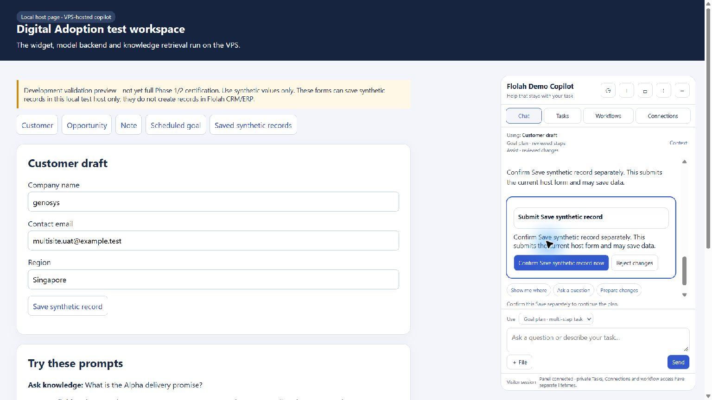
Actual user Chrome: separate Save confirmation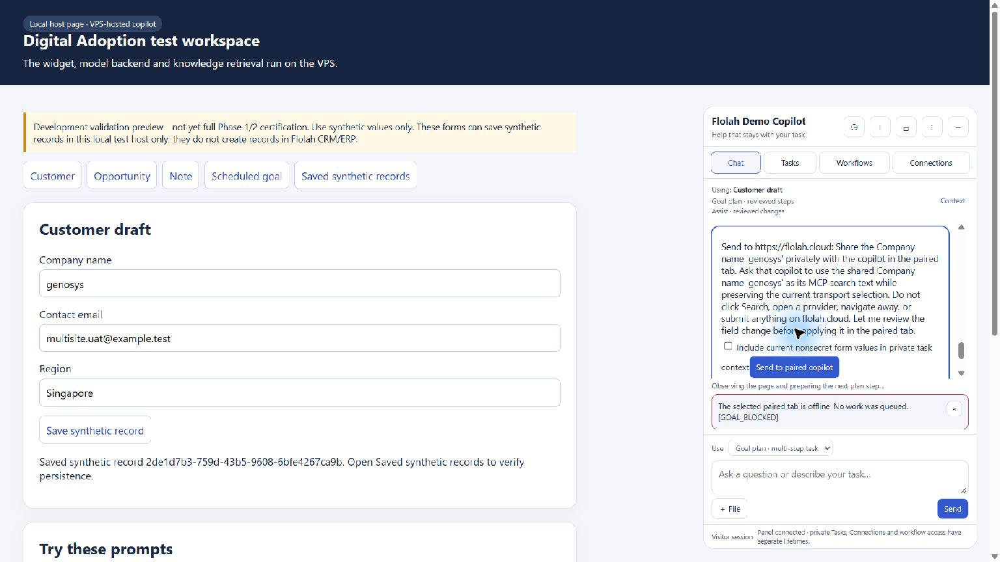
Actual user Chrome: company-only instruction, no attached file or full-form sharing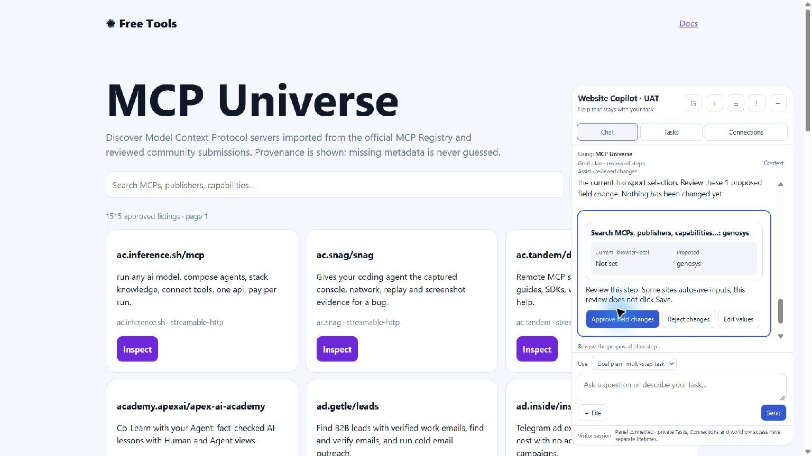
Actual user Chrome: recipient search field review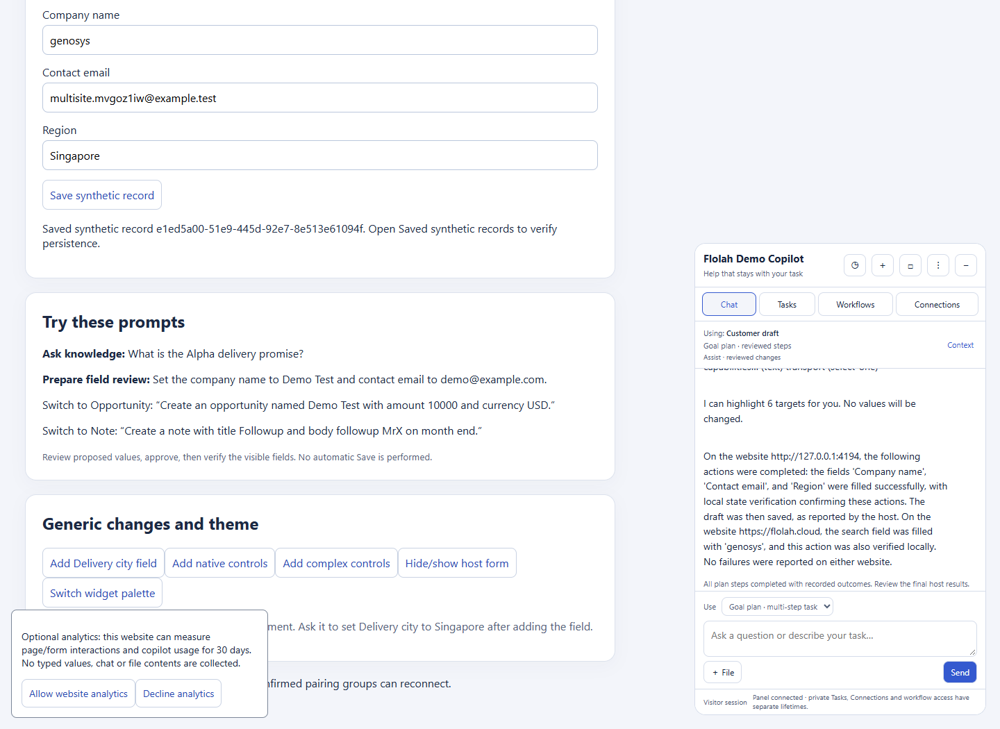
Fresh run: source goal completed, no clarification or recovery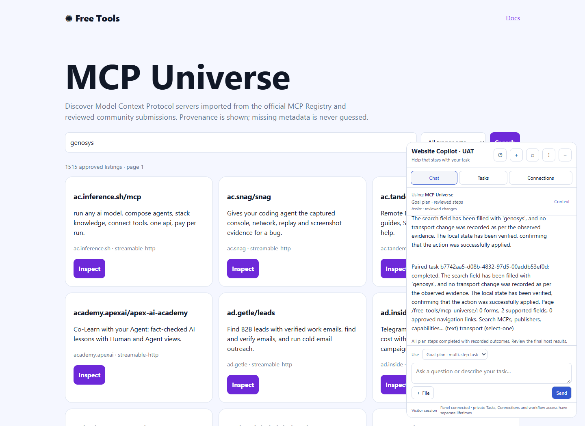
Fresh run: recipient actual result returned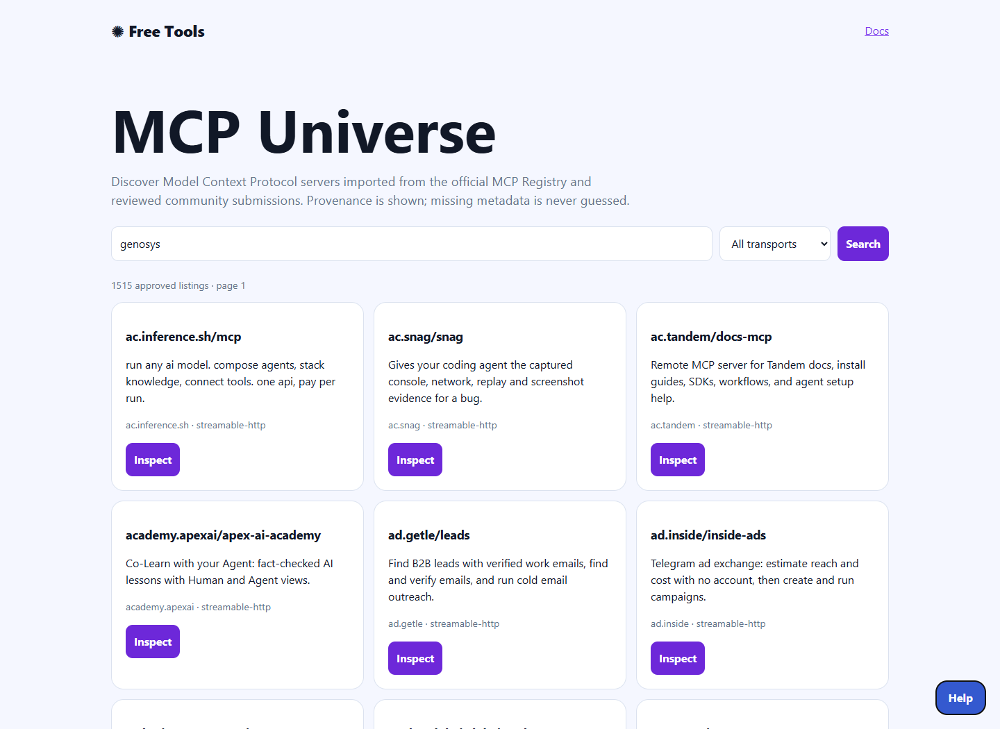
Fresh run: genosys search text and unchanged All transports; Search was not clickedAudit and remaining scope
Historical failures and recovered original run retained
Chrome conversation and checker recovery
474/474 current checks passed · 100%
0 failed · 0 partial. The counts below describe this scoped update. Earlier report sections overlap these regressions and must not be added together. This does not certify the previously deferred device/accessibility matrix or full Phase 1/2.
Verified in the user’s existing Chrome: read-only MCP guidance completed, and both browser minimize/restore and restore/maximize retained the prompt and response. The local draft was reloaded for the fix and restored to the same three synthetic values without Save. Its existing MCP counterpart is online; Goal plan is selected, and a reconstructed continuation prompt is prepared but unsent.
Findings, fixes and recommendations
The compact retry uses the provider’s documented thinking-mode API toggle only on a supported endpoint. It never treats reasoning text as a verdict, changes the selected model, disables maker/checker, or changes local-model thinking policy.
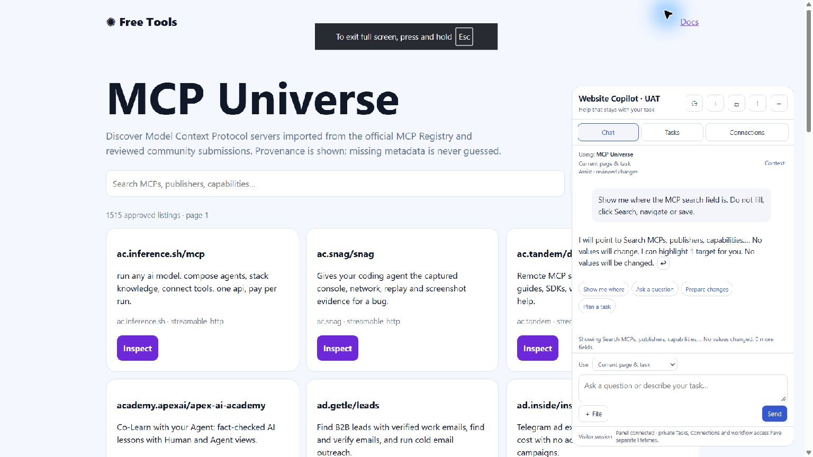
Actual user Chrome: conversation retained after native minimize/restore and maximize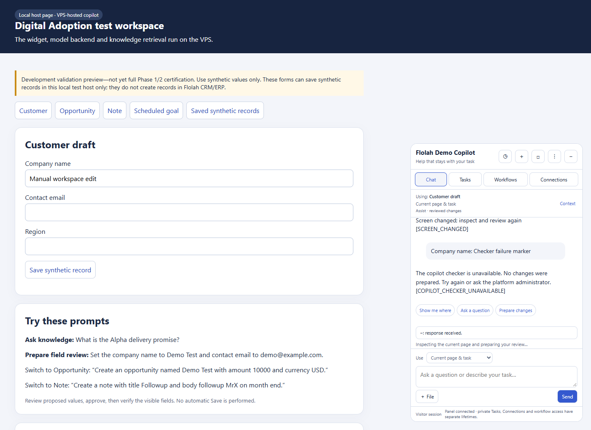
Checker error plus presentation regression retained history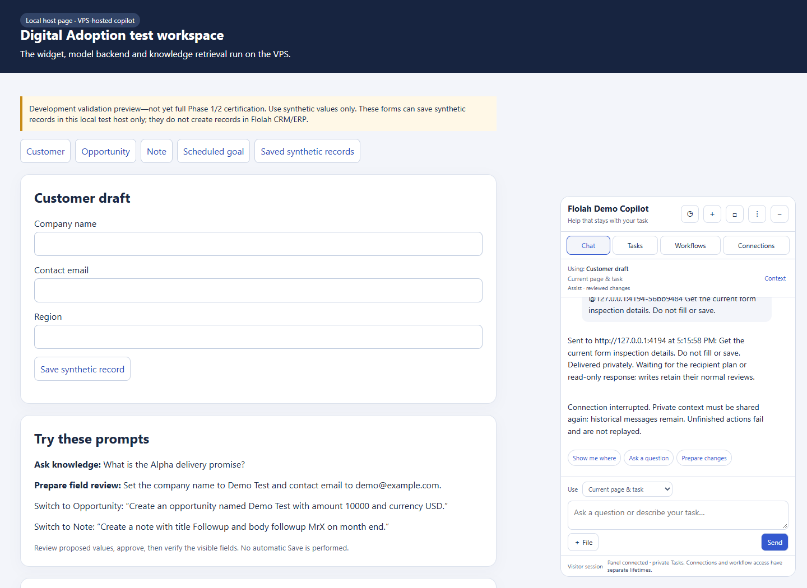
Dropped sockets reconnect without losing historical chat or replaying effects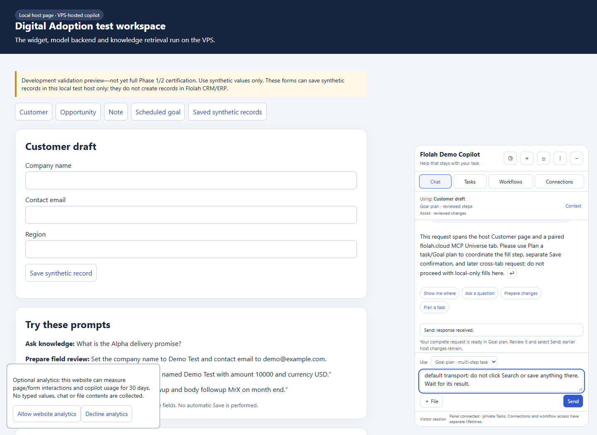
Full request preserved in Goal plan without applying a local-only review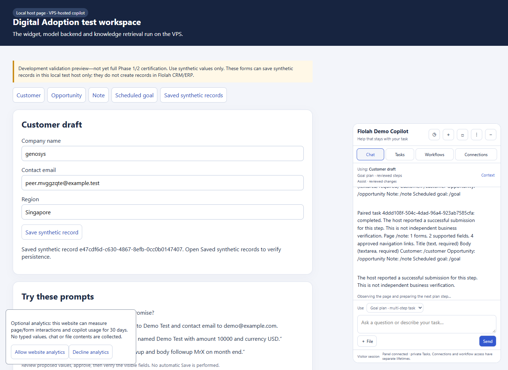
Actual-model source goal after local and recipient saves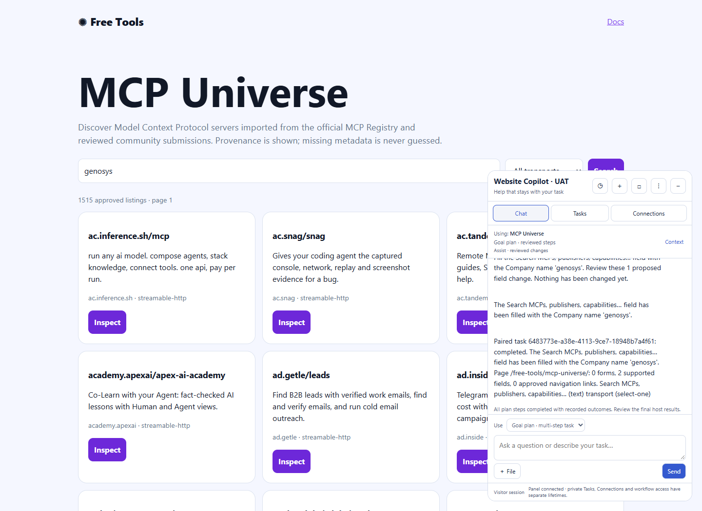
Public recipient used the shared form value without public submissionOperational proof and limits
- Earlier unarchived transcript was not recovered. The continuation was reconstructed from the observed synthetic draft.
- Actual user Chrome checks were read-only guidance and window retention. Cross-tab fill/save acceptance used a separate explicitly authorized Chrome test profile.
- The current-page scope notice is an explicit UI boundary and transition, not a claim of perfect semantic automatic goal routing.
- The real retry probe used a temporary per-call 128-token cap to force truncation; global maker/checker remained enabled on the same passive route at 2048.
- Native Safari/iOS, Android Chrome and full screen-reader checks remain previously deferred. Existing registrations do not establish fresh-owner DNS/email acceptance.
- Earlier failures and test-harness readiness failures remain available; a successful final run does not prove statistical model reliability.
Earlier attempts retained
Private paired goals — no file required
460/460 regressions passed
Latest live acceptance: 5 passed, 0 failed, 0 not run (100%). Passed for this scoped feature update. Current scoped total: 465/465 (100.0%). The separate live result determines acceptance; the larger regression count does not conceal live failures.
The user-approved checker budget is saved as 2,048. Maker/checker remains enabled on the same passive route. Admin, Models & routing and Digital Adoption render the same editor; all save one backend setting, digital_adoption_maker_checker. No page takes precedence; refresh an already-open editor before changing it.
Private inspection returns supported forms, required fields and navigation. Current nonsecret values are shared only when explicitly selected. A multi-tab goal delegates a complete remote task; its recipient builds local steps with normal field/navigation/Save reviews. The source waits for the actual recipient outcome, not delivery alone.
Feature review and recommendations
Try it
- Refresh both approved website tabs once. Pair and confirm them in Connections.
- Select Inspect this copilot to request the other tab’s supported form structure. No attachment is needed.
- For handoff, select sharing consent and optionally Include current nonsecret form values; address the recipient with @ in the ordinary composer.
- In Goal plan mode, describe local work and complete recipient work. Review the plan, each field change, each Save and the peer send.
- Review/start the recipient goal. The source waits for its recorded outcome. End task clears private access; pairing has a separate lifetime.
Local test: fill/save Customer; inspect paired Note; reuse shared Customer name/email as Note Title/Body; fill/save Note. Independent API and records-page readback must find exactly two synthetic records. Public test: use private Company name as MCP search text, preserve transport default and perform no public submission.
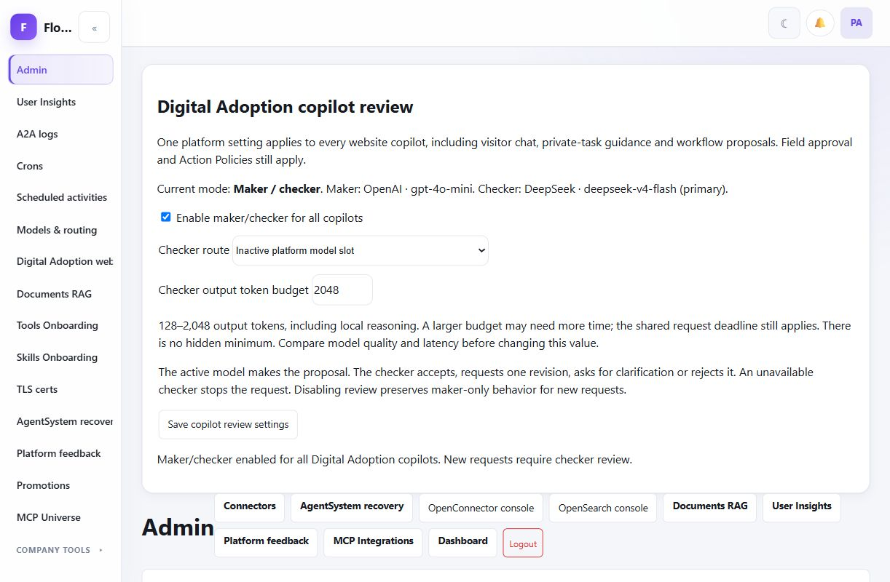
Saved global checker budget, same passive routeSource goal after both tab saves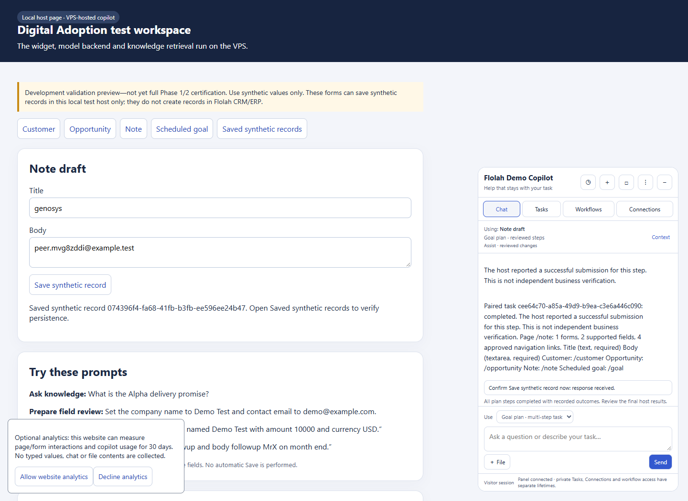
Recipient Note after reviewed Save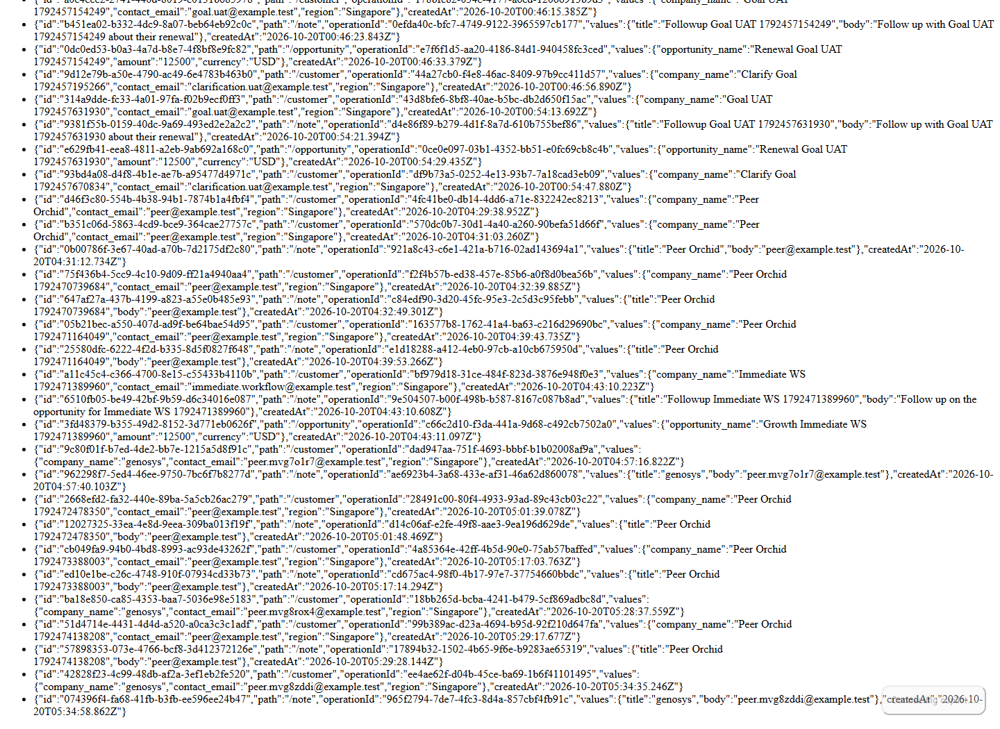
Independent saved-record readback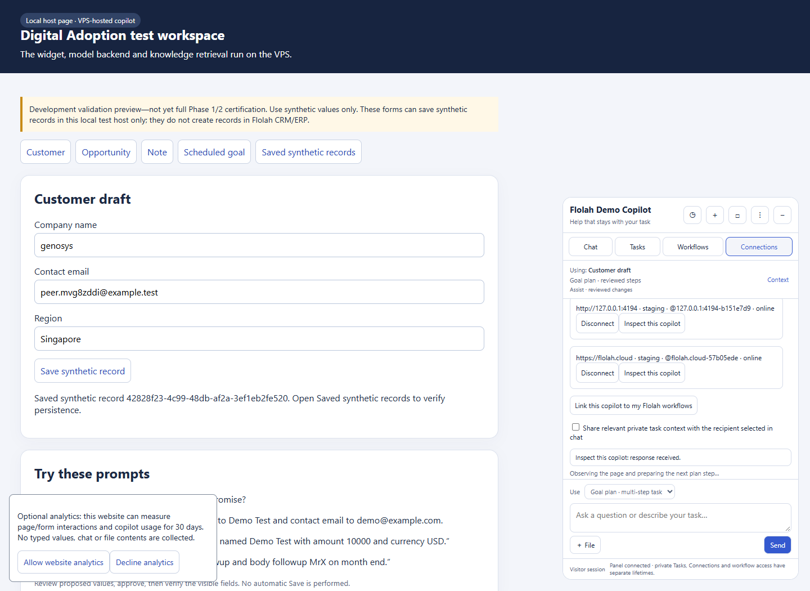
Public form inspection returned privatelyPublic recipient used private source valueEvidence and limits
- Approved loopback site and public flolah.cloud only, in a separate Playwright Chrome profile.
- Browser regressions use deterministic model/owner fixtures; live acceptance uses the deployed active maker and passive checker.
- No attachment, registration seeding, public host submission, autonomous policy grant or laptop exposure.
- Earlier failures/interrupted attempts remain available. One successful run is not a statistical model-reliability guarantee.
- Native Safari/iOS, Android and full screen-reader checks remain previously deferred. No fresh-owner DNS/email proof or full Phase 1/2 certification is claimed.
Earlier attempts retained, including failures
Paired handoff & connection recovery
441/441 passed · 100%
0 failed · 0 partial in this scoped rerun. The 414 Linux checks repeat the service suite and are not counted twice. The earlier 530-check suite below is historical and overlaps this rerun.
A new @ handoff can start an empty private task after bilateral pairing and sharing consent; no file or upload permission is required. An expired explicit task ID fails without reviving files or retrying the instruction. Saved pairing reconnects after a transient socket drop. Failed session reconnects retain a single visible retry button. A browser-session expiry still requires Reconnect and never extends pairing consent.
@127.0.0.1:4194-[current panel ID] - get the form inspect details
The live test verifies delivery to the recipient chat. Delivery is separate from automatically executing an inspection or returning a response. Use the current recipient from @ suggestions after reconnect, as live panel IDs can change.
Recommendation: refresh existing tabs once to load the update. Use Reconnect for expired browser authority, and confirm pairing again only if its visitor-selected expiry or revocation requires it. Failed actions are never replayed.
Separate Playwright Chrome profile; no laptop exposure, public form submission or new policy grant. Full Phase 1/2 and deferred device/accessibility checks remain separate.
Machine-readable report · Deployment and preserved services · Linux repeat · Source hashes · Earlier attempt: assertion correction · Earlier attempt: overlapping retry button exposed and fixed ·
Updated report at the original requested URL. Earlier 448-check report · Earlier goal report.
Digital Adoption Copilot · 20261020-pointer-lIntent, continuity & private history
530/530 passed · 100.0%
0 failed · 0 partial · 0 deferred in this scoped suite.
Generic intent and plural/typo interpretation, read-only pointing versus activation, animated feedback, form/reply/new-task continuity, private conversation archive/restore, view preservation and per-website temporary content. Linux repeats are not double counted.
Full Phase 1/2 certification remains separate. See the limitations below.
Your reported requests
show me opportunities button/link
highlight the last changes
Reply: show me those fields again
The model interprets the full request, explicit replies and live fields/links/DOM. A uniquely matching plural or typo can identify the observed control. Showing returns highlights; navigation and field changes retain separate reviews, and Save remains separately authorized. No website-specific alias dictionary was introduced.
History icon retained. + archives the current chat and starts fresh. Continue restores advisory messages and supports a new grounded follow-up; it does not restore expired task files or replay actions. Private chat and task passages share the configurable 24-hour retention and a temporary index per website. Knowledge indexes remain separate.
Acceptance and regression
Pointer · Chrome
- P01_GUIDANCE_ANIMATES_WITHOUT_CLICK_OR_EDIT · passed · Screenshot
- P02_MENU_GUIDANCE_HAS_NO_CLICK_RIPPLE_OR_ACTIVATION · passed · Screenshot
- P03_OVERLAY_IS_POINTER_TRANSPARENT · passed · Screenshot
- P04_SCROLL_RESIZE_AND_LAYOUT_SHIFT_FOLLOW_TARGET · passed · Screenshot
- P05_REMOVED_HIDDEN_OR_RELABELLED_TARGET_CLEARS · passed · Screenshot
- P06_FRESH_SNAPSHOT_AND_STOP_CLEAR_POINTER · passed · Screenshot
- P07_REDUCED_MOTION_RETAINS_STATIC_POINTER · passed · Screenshot
- P08_APPROVED_CHECKBOX_RIPPLES_EXACTLY_ONE_CLICK · passed · Screenshot
- P09_NOOP_AND_UNAPPROVED_HAVE_NO_CLICK_FEEDBACK · passed · Screenshot
- P10_SAVE_RIPPLE_WITH_HOST_SUCCESS_AND_NO_REPLAY · passed · Screenshot
- P11_NAVIGATION_USES_ONE_REVIEWED_ACTIVATION · passed · Screenshot
- P12_TEXT_AND_SELECT_CHANGES_ARE_NOT_PRESENTED_AS_CLICKS · passed · Screenshot
- P13_REPLACEMENT_AND_DESTROY_LEAVE_NO_NODES_OR_ANIMATIONS · passed · Screenshot
- P14_GUIDANCE_EXPIRES_WITHOUT_HOST_ACTION · passed · Screenshot
- P15_RECENT_CONTEXT_HAS_IDENTITIES_NOT_PRIVATE_VALUES · passed · Screenshot
- P16_PREVIOUS_FIELD_IDENTITY_CANNOT_REBIND_TO_REPLACEMENT · passed · Screenshot
- P17_REJECT_AND_NEW_CONVERSATION_CLEAR_CONTEXT · passed · Screenshot
- P18_ACTUAL_ACTIVATION_ANIMATION_SURVIVES_READONLY_OBSERVATION · passed · Screenshot
- P19_NAVIGATION_LINK_REF_POINTS_WITHOUT_ACTIVATING · passed · Screenshot
- P20_CHANGED_LINK_DESTINATION_AND_LABEL_INVALIDATE_GUIDANCE · passed · Screenshot
- P21_INTERACTIVE_RESERVE_EXPOSES_UNMATCHED_REAL_CONTROLS · passed · Screenshot
Pointer · Edge
- P01_GUIDANCE_ANIMATES_WITHOUT_CLICK_OR_EDIT · passed · Screenshot
- P02_MENU_GUIDANCE_HAS_NO_CLICK_RIPPLE_OR_ACTIVATION · passed · Screenshot
- P03_OVERLAY_IS_POINTER_TRANSPARENT · passed · Screenshot
- P04_SCROLL_RESIZE_AND_LAYOUT_SHIFT_FOLLOW_TARGET · passed · Screenshot
- P05_REMOVED_HIDDEN_OR_RELABELLED_TARGET_CLEARS · passed · Screenshot
- P06_FRESH_SNAPSHOT_AND_STOP_CLEAR_POINTER · passed · Screenshot
- P07_REDUCED_MOTION_RETAINS_STATIC_POINTER · passed · Screenshot
- P08_APPROVED_CHECKBOX_RIPPLES_EXACTLY_ONE_CLICK · passed · Screenshot
- P09_NOOP_AND_UNAPPROVED_HAVE_NO_CLICK_FEEDBACK · passed · Screenshot
- P10_SAVE_RIPPLE_WITH_HOST_SUCCESS_AND_NO_REPLAY · passed · Screenshot
- P11_NAVIGATION_USES_ONE_REVIEWED_ACTIVATION · passed · Screenshot
- P12_TEXT_AND_SELECT_CHANGES_ARE_NOT_PRESENTED_AS_CLICKS · passed · Screenshot
- P13_REPLACEMENT_AND_DESTROY_LEAVE_NO_NODES_OR_ANIMATIONS · passed · Screenshot
- P14_GUIDANCE_EXPIRES_WITHOUT_HOST_ACTION · passed · Screenshot
- P15_RECENT_CONTEXT_HAS_IDENTITIES_NOT_PRIVATE_VALUES · passed · Screenshot
- P16_PREVIOUS_FIELD_IDENTITY_CANNOT_REBIND_TO_REPLACEMENT · passed · Screenshot
- P17_REJECT_AND_NEW_CONVERSATION_CLEAR_CONTEXT · passed · Screenshot
- P18_ACTUAL_ACTIVATION_ANIMATION_SURVIVES_READONLY_OBSERVATION · passed · Screenshot
- P19_NAVIGATION_LINK_REF_POINTS_WITHOUT_ACTIVATING · passed · Screenshot
- P20_CHANGED_LINK_DESTINATION_AND_LABEL_INVALIDATE_GUIDANCE · passed · Screenshot
- P21_INTERACTIVE_RESERVE_EXPOSES_UNMATCHED_REAL_CONTROLS · passed · Screenshot
Workspace
- UX01_VISITOR_CAPABILITIES_AND_SINGLE_COMPOSER · passed · Screenshot
- UX02_UNIFIED_KNOWLEDGE_AND_HISTORY · passed · Screenshot
- UX03_REVIEW_EDIT_APPLY_AND_REJECT · passed · Screenshot
- UX04_PERSISTENT_FAILURE_ACROSS_VIEWS · passed · Screenshot
- UX05_TASK_UPLOAD_AND_CONTEXT_SEPARATION · passed · Screenshot
- UX06_PAIRING_SETUP_AND_UNIFIED_HANDOFF · passed · Screenshot
- UX07_END_TASK_CLEARS_BOTH_WITHOUT_UNPAIRING · passed · Screenshot
- UX08_OWNER_COACHING_INSPECT_AND_TEACH · passed · Screenshot
- UX16_SYNTHETIC_RECORDING_REVIEW_DOWNLOAD_AND_DISCARD · passed · Screenshot
- UX09_REVOKED_COACHING_FAILS_CLOSED_AND_HIDES_ACTIONS · passed · Screenshot
- UX10_SHORT_VIEWPORT_STICKY_COMPOSER_AND_KEYBOARD · passed · Screenshot
- UX11_MOBILE_REFLOW_AND_SINGLE_COMPOSER · passed · Screenshot
- UX12_DISABLED_FEATURES_AND_WORKFLOW_ONLY_VISITOR · passed · Screenshot
- UX13_NEW_CONVERSATION_ARCHIVE_AND_RESUME · passed · Screenshot
- UX14_BROWSER_LOCAL_CURRENT_VALUE_NEVER_UPLOADED · passed · Screenshot
- UX15_OPT_IN_DOCK_AND_EXPAND_RETAIN_FORM · passed · Screenshot
- UX17_PANEL_SIZE_AND_THEME_PREFERENCES · passed · Screenshot
- UX18_QUICK_ASSISTANCE_CHOICES · passed · Screenshot
Goal UI
- GOAL01_PLAN_REVIEW_HAS_NO_EFFECTS · passed · Screenshot
- GOAL02_PAUSE_PANEL_RELOAD_AND_FRESH_REVIEW · passed · Screenshot
- GOAL03_EDITED_REVIEW_THEN_QUERY_REQUIRES_SEPARATE_APPROVAL · passed · Screenshot
- GOAL04_SELECTION_AND_READONLY_STEP_COMPLETE_WITHOUT_SAVE · passed · Screenshot
- GOAL07_WORKFLOW_REVIEW_AFTER_GOAL_USES_ITS_OWN_CONTEXT · passed · Screenshot
- GOAL05_PRIVATE_FILE_REMOVAL_CLEARS_GOAL_AND_PENDING_REVIEW · passed · Screenshot
- GOAL06_MISSING_FACT_CLARIFIES_WITHOUT_A_PLAN_OR_EFFECT · passed · Screenshot
- GOAL08_CLARIFICATION_REPLY_KEEPS_GOAL_AND_RETURNS_REVIEWED_PLAN · passed · Screenshot
Field guidance
- G01_WHERE_QUESTION_POINTS_WITHOUT_EXTRA_APPROVAL_OR_MODEL · passed · Screenshot
- G02_SHOW_ME_WHERE_REUSES_TARGET · passed · Screenshot
- G03_SUPERSEDING_SLOW_REQUEST_POINTS_WITHOUT_ABORT_ERROR · passed · Screenshot
- G04_PRIVATE_TASK_DOES_NOT_DIVERT_POINTING_TO_FILE_SUMMARY · passed · Screenshot
- G05_AMBIGUOUS_FIELDS_CLARIFY_WITHOUT_FALSE_POINT · passed · Screenshot
- G06_OFFSCREEN_TARGET_SCROLLS_AND_POINTS · passed · Screenshot
- G07_NEW_CONVERSATION_DOES_NOT_REPLAY_CLEARED_REQUEST · passed · Screenshot
- G08_SHOW_ME_WHERE_USES_LATEST_QUESTION_AFTER_KNOWLEDGE_MODE · passed · Screenshot
Workflow server → copilot
Live semantic continuity
- CONT01_CURRENT_SCREEN_IN_CONTEXT_NOT_GENERIC_DOCUMENT_TITLE · passed · Screenshot
- CONT11_PLURAL_CONTROL_LOCATION_POINTS_WITHOUT_NAVIGATION · passed · Screenshot
- CONT12_NONKEYWORD_LOCATION_AND_UNIQUE_TYPO_STAY_READONLY · passed · Screenshot
- CONT13_ACTION_WORD_IN_LABEL_DOES_NOT_ACTIVATE_SAVE · passed · Screenshot
- CONT02_PREPARE_AND_APPLY_SYNTHETIC_DRAFT · passed · Screenshot
- CONT03_INTERPRETS_RECENT_CHANGES_WITHOUT_REPLAY · passed · Screenshot
- CONT04_CLEAR_NEW_FIELD_REQUEST_USES_NEW_TARGET · passed · Screenshot
- CONT05_EXPLICIT_REPLY_DEFAULTS_TO_REPLIED_CONTEXT · passed · Screenshot
- CONT06_NEW_CONVERSATION_DOES_NOT_REUSE_OLD_FIELDS · passed · Screenshot
- CONT07_PENDING_REVIEW_IS_NOT_CLAIMED_AS_APPLIED · passed · Screenshot
- CONT08_SCREEN_LABEL_UPDATES_FOR_ANOTHER_FORM · passed · Screenshot
- CONT09_NAVIGATION_CONTINUITY_USES_NEW_FORM_CONTEXT · passed · Screenshot
- CONT10_UNRELATED_NEW_TARGET_DOES_NOT_REUSE_PREVIOUS_TARGET · passed · Screenshot
Live private history
- HIST00_MODES_MINIMIZE_AND_EXPAND_KEEP_CHAT_AND_DRAFT · passed · Screenshot
- HIST01_PLUS_ARCHIVES_AND_STARTS_FRESH_CHAT · passed · Screenshot
- HIST02_REFRESH_AND_RESUME_RESTORE_MESSAGES_WITHOUT_ACTION_REPLAY · passed · Screenshot
- HIST06_RESTORED_CONTEXT_GUIDES_FRESH_CONTROL_WITHOUT_REPLAY · passed · Screenshot
- HIST03_DIFFERENT_VISITOR_CANNOT_LIST_ARCHIVED_CHAT · passed · Screenshot
- HIST04_WEBSITE_SCOPE_DENIES_COPIED_BROWSER_PROOF · passed · Screenshot
- HIST05_DELETE_REMOVES_ONLY_OWN_ARCHIVE · passed · Screenshot
Live goal regression
- LIVE_GOAL01_COMPLEX_CUSTOMER_NOTE_OPPORTUNITY_SAVED_AND_READ_BACK · passed · Screenshot
- LIVE_GOAL03_CLARIFICATION_CONTINUES_SAME_GOAL_BEFORE_FILL_OR_SAVE · passed · Screenshot
- LIVE_GOAL02_PUBLIC_FILTER_LOCATE_AND_SUMMARIZE_WITHOUT_SAVE · passed · Screenshot
Live pointer · both sites
Loader recovery
Private storage and expiry
- STORAGE01_DISTINCT_WEBSITE_INDEXES · passed
- STORAGE02_PARSE_INDEX_RETRIEVE · passed
- STORAGE03_OTHER_VISITOR_DENIED · passed
- STORAGE04_END_REVOKES_ACCESS_BEFORE_RETENTION · passed
- STORAGE05_PRIVATE_CHAT_ROUNDTRIP_AND_SEGREGATION · passed
- STORAGE06_EXPIRED_CONTENT_INACCESSIBLE · passed
- STORAGE07_DEPLOYED_EXPIRY_WORKER · passed
- STORAGE08_DELETE_REVOKES_PRIVATE_CHAT · passed
Animation evidence
Chrome synthetic controls: guidance animates without a click pulse; an actual approved checkbox, navigation or Save dispatch produces the click pulse. Reduced-motion, stale targets, expiry and Stop are covered.
Screenshots
 User existing in-app browser: panel visibly restored after reload
User existing in-app browser: panel visibly restored after reload Plural request points to the actual Opportunity link; no activation
Plural request points to the actual Opportunity link; no activation Semantic request and unique typo; no keyword-led navigation
Semantic request and unique typo; no keyword-led navigation Finding the Save control does not save
Finding the Save control does not save Recent applied fields guide using fresh identities
Recent applied fields guide using fresh identities Explicit reply continues the referenced field batch
Explicit reply continues the referenced field batch Messages and unsent draft survive mode/window changes
Messages and unsent draft survive mode/window changes History icon lists private conversation titles
History icon lists private conversation titles Restored history drives a fresh grounded guide, no replay
Restored history drives a fresh grounded guide, no replay Another website cannot list the archive, even with copied test proof
Another website cannot list the archive, even with copied test proof Server-command workflow regression and record readback
Server-command workflow regression and record readback Actual model-driven three-form saves independently read back
Actual model-driven three-form saves independently read backScope and recommendations
- This is scoped acceptance, not full Phase 1/2 certification. The broader pre-existing ledger remains 14 passed / 16 partial / 2 deferred; native Safari/iOS/Android and full screen-reader checks are deferred by user instruction.
- Read-only targets can highlight buttons, menus, links and rendered content. Arbitrary button/menu execution is not supported. Navigation, field changes and owner-bound Save retain their existing reviews and policies.
- The WebSocket regression exercises the real SDK/server command path with an isolated synthetic policy/model adapter. No new signed-in Flolah workflow-runner autonomous grant was used in this release.
- The real three-form model test explicitly approves local browser effects, then independently reads the saved records. Public flolah.cloud host submissions are blocked.
- Private-storage component authority metadata is isolated; actual browser session/origin/website/visitor entitlement is separately covered by HTTP and live history tests.
- The cleanup worker deleted a controlled expired canary. A new 24-hour wall-clock retention interval was not observed. Ended/expired content is denied before physical cleanup.
- Index provisioning occurs after successful verification and before activation. Pending/unverified registrations allocate no indexes. Existing approved UAT websites do not prove fresh-owner DNS/email onboarding without prior registration.
Recommendation: retain maker/checker, review consequential ambiguous choices, and inspect uncertain Save outcomes instead of retrying. Use the history icon to explicitly continue an earlier chat. Minimize, expand and Use-mode switches preserve active messages and the unsent draft.
Operations and provenance
Earlier attempts retained
Earlier failures exposed a text-only guide response, missing link highlight contract, navigation continuation, OpenSearch JSON key ordering, startup handler timing and an invalid goal intent enum. They remain evidence of the development process and are not counted as current passes.